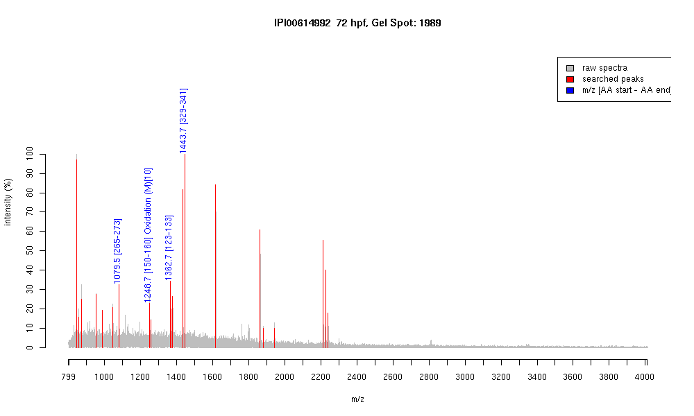

| Name | PREDICTED: type II cytokeratin isoform12 |
|---|---|
| MW | 54074.8 |
| PI | 5.34 |
| Mascot Protein Score | 69 |
| Masses (matched / unmatched) | 4 / 28 |

| Peptide | MZ (calc) | MZ (observed) | Error (DA) | Error (PPM) | Start | Stop | Modifications |
|---|---|---|---|---|---|---|---|
| AQYEDIANR | 1079.5116 | 1079.5029 | -0.0087 | -8 | 265 | 273 | |
| QLDGLGNEKMK | 1248.6252 | 1248.6624 | 0.0372 | 30 | 150 | 160 | Oxidation (M)[10] |
| WSLLQEQTTTR | 1362.7013 | 1362.6841 | -0.0172 | -13 | 123 | 133 | |
| ANLEAQIAEAEER | 1443.7074 | 1443.6879 | -0.0195 | -14 | 329 | 341 |